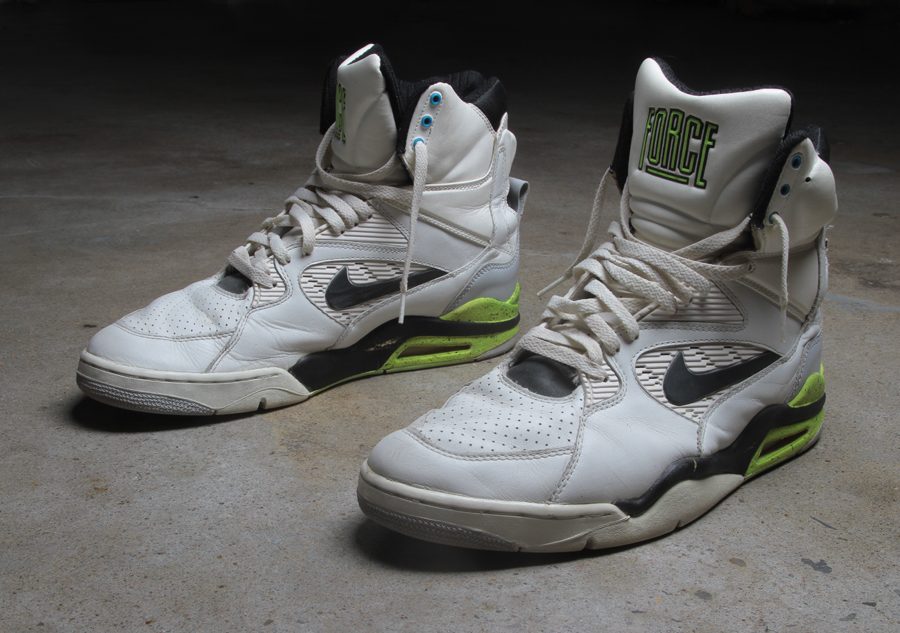
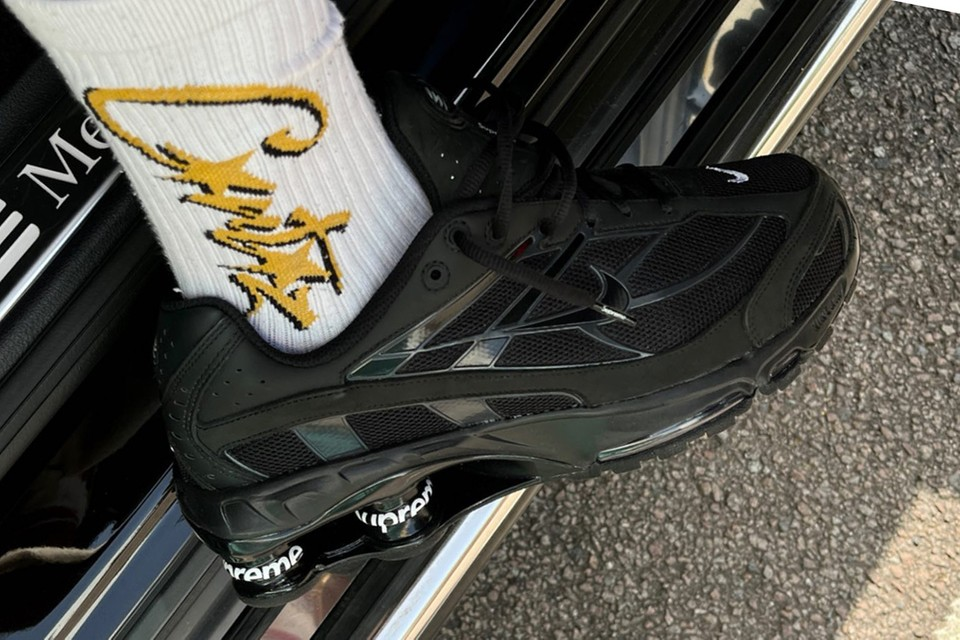
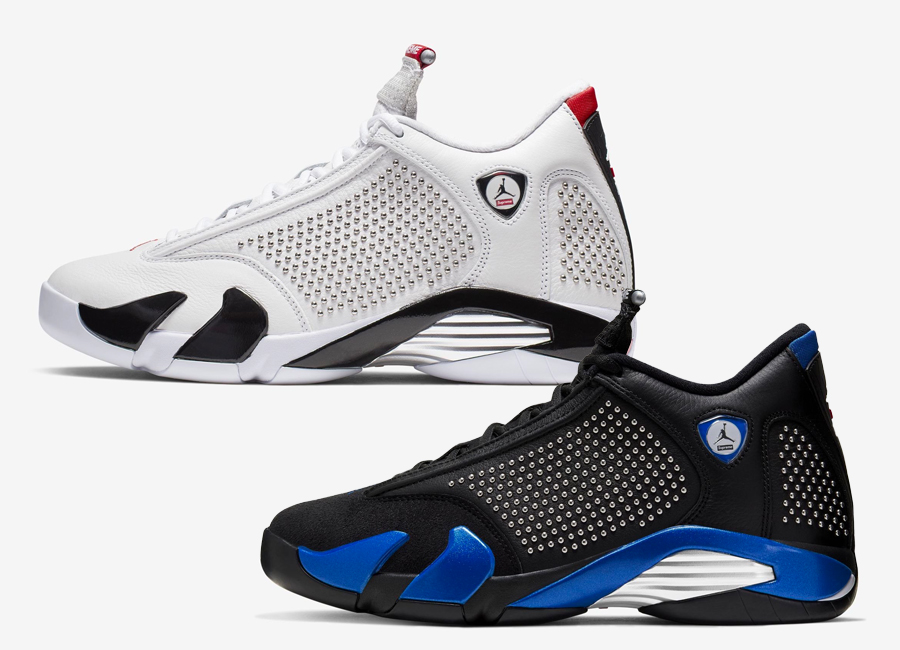

O calçado ficou famoso por ser promovido por um dos astros do Dream Team dos Estados Unidos, o jogador David Robinson. Além disso, o tênis foi um dos primeiros com a tecnologia de Air Fit, aquela bombinha de ar que fazia a parte de trás do tênis inflar e foi muito popular na década.
Foi no ano 2000 que o primeiro modelo do Nike Shox chegou ao mercado. De lá para cá, foram várias versões e algumas collabs – a mais recente delas com a estilista jamaicana-britânica Martine Rose. No Brasil, o modelo parou de ser comercializado em 20221, mas o interesse em torno dele não diminiu.
A segunda colaboração Supreme x Nike para a temporada 2019 viu a marca de Nova York "se importar" com um modelo Air Jordan pela segunda vez na história. A Supreme lançou duas colorways com detalhes cravejados metálicos nos painéis laterais do Air Jordan 14. O design da silhueta, principalmente, é inspirado na Ferrari 550 Maranello de Michael Jordan e o tênis OG foi usado no jogo seis das finais da NBA de 1998.
